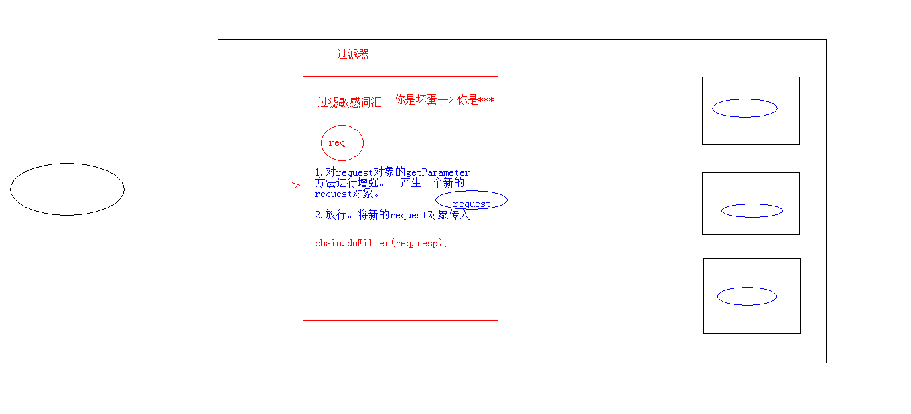
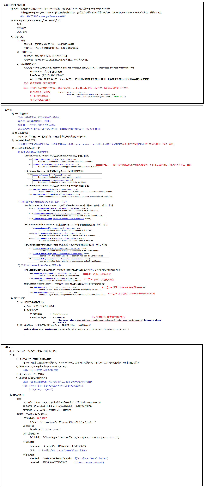

一、filter过滤器
web中的过滤器：当访问服务器的资源时，过滤器可以将请求拦截下来，完成一些特殊的功能
过滤器的作用：（完成一些通用的功能）
一般用于完成通用的操作。如：登录验证，设置编码，敏感字符过滤......
快速入门：
步骤：
定义一个类，实现接口Filter
复写doFilter方法
配置拦截路径
<filter>
<filter-name>demo2</filter-name>
<filter-class>filter.FilterDemo2</filter-class>
</filter>
<filter-mapping>
<filter-name>demo2</filter-name>
<!--拦截路径-->
<url-pattern>/*</url-pattern>
</filter-mapping>
@WebFilter("/*")//"/*"表示访问所有资源之前，都会执行该过滤器
public class FilterDemo1 implements Filter {
@Override
public void init(FilterConfig filterConfig) throws ServletException {
}
@Override
public void doFilter(ServletRequest servletRequest, ServletResponse servletResponse, FilterChain filterChain) throws IOException, ServletException {
filterChain.doFilter(servletRequest,servletResponse);
System.out.println("filterDemo1被执行了......");
}
@Override
public void destroy() {
}
}

增强对象的功能：
设计模式：一些通用的解决问题的设计模式
装饰模式：
代理模式：
概念：
真实对象：被代理的对象
代理对象：
代理模式：代理对象代理真实对象，达到增强真实对象功能的目的
实现方式：
静态代理：有一个类文件描述代理模式
动态代理：在内存中形成代理类(java.lang.Proxy)
实现步骤：
代理对象和真实对象实现相同的接口
代理对象 = Proxy.newProxyInstance();
使用代理对象调用方法
增强方法
增强方式：
增强参数列表
增强返回值类型
增强方法体执行逻辑
三个参数：
类加载器：真实对象.getClass().getClassLoader()
接口数组：真实对象.getClass().getInsterfaces()
处理器：new InvocationHandler()
代理逻辑编写的方法：代理对象调用的所有方法都会触发该方法执行
参数：
proxy：代理对象
method：代理对象调用的方法，被封装为IDE对象
args：代理对象调用的方法时，传递的实际参数
被代理的类一定要实现接口
总结：所有的代理对象的方法执行，都会执行到InvocationHandler的invoke方法，我们就可以在这个方法中：
1.可以增强方法参数
2.可以增强返回值
3.可以增强方法逻辑
public class ProxyTest {
public static void main(String[] args) {
//1.创建真实类对象
Asus asus = new Asus();
//2.动态代理增强ASUS对象
SaleComputer proxy = (SaleComputer) Proxy.newProxyInstance(asus.getClass().getClassLoader(), asus.getClass().getInterfaces(), new InvocationHandler() {
@Override
public Object invoke(Object proxy, Method method, Object[] args) throws Throwable {
System.out.println("动态逻辑方法被执行了。。。。。");
System.out.println("方法名字：" + method.getName());
System.out.println("参数数组：" + args[0]);
return null;
}
});
//3.调用方法
String computer = proxy.saleComputer(39999);
System.out.println(computer);
}
}
二、Listener：监听器
概念：web三大组件之一，是一个类，用来监视其他类的变更或域的变化
事件监听机制
事件：一件事情
事件源：事件发生的地方
监听器：一个对象
注册监听：将事件、事件源、监听器绑定在一起，当事件源某一个状态发生变化，执行监听器代码
ServletContextListener:监听ServletContext对象的创建和销毁
方法：
void contextDestroyed(ServletContextEvent sce):ServletContext 对象被销毁之前会调用该方法
void contextInitialized(ServletContextEvent sce):ServletContext对象创建后会调用该方法
步骤：
定义一个类，实现ServletContextListener接口
复写方法
配置
<listener>
<listener-class>cn.itcast.web.listener.ContextLoaderListener</listenerclass>
</listener>
指定初始化参数<context-param>
